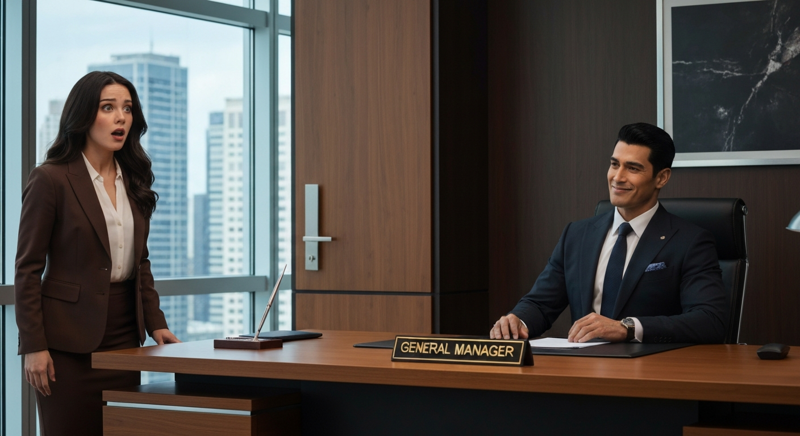
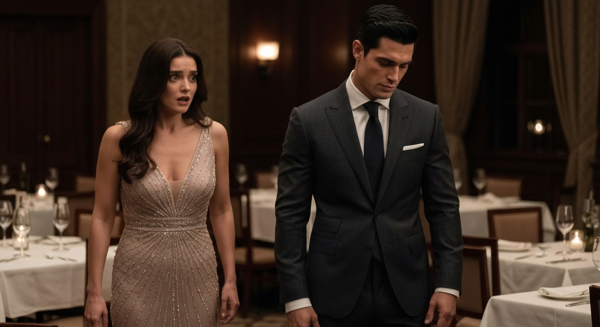
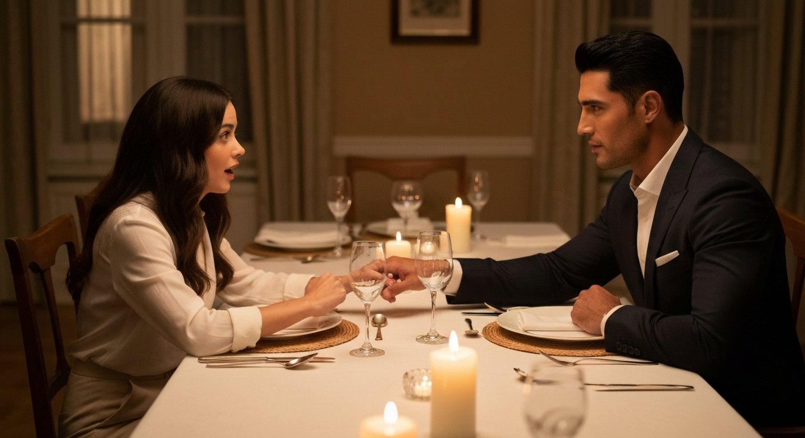

復仇遊戲：我的前任總裁，是他？

第 1 篇
誰允許他坐我的位置？
還記得三年前，我毅然決然地拒絕了Leo的求婚，只因為他對工作狂熱，而我渴望的是平凡幸福？那時，我以為我只是選擇了一條不同的路。沒想到，這竟是噩夢的開始。今天，當我意氣風發地踏入辦公室，準備迎接我夢寐以求的行銷總監職位時，卻看到那個曾經承諾給我所有，卻被我親手推開的男人，正坐在我的專屬辦公桌後，用一種深不可測的眼神望著我。空氣瞬間凝結。他的嘴角勾起一抹玩味的弧度，輕輕敲了敲桌子，彷彿在宣告主權。最可怕的是，我發現他的身後，赫然掛著我的名牌，只不過，上面的職位赫然寫著：『總經理』。我的世界，在這一秒崩塌。這不是巧合，這是一場精心策劃的報復。他最害怕失去什麼？大概就是他被拒絕的尊嚴吧。而我，我最害怕的，就是失去我為之奮鬥的一切。這場遊戲，才剛剛開始。
💬 當我以為逃離了他，卻發現他成了我的頂頭上司。
第 2 篇
舊愛變新官，我該如何自處？
「葉小姐，久仰大名。」Leo的聲音低沉磁性，卻像一把刀，毫不留情地刺穿我築起的心防。他當然知道我叫什麼，知道我的一切。他的眼神，帶著過去的憤怒與此刻的勝利。我強迫自己冷靜，深吸一口氣：「總經理，請問這是什麼意思？」他緩緩起身，高大的身影投下巨大陰影，壓迫感十足。「意思很簡單，從現在起，我是你的上司。」他走到我面前，幾乎貼近，那熟悉的古龍水味讓我心頭一緊。他輕聲說：「如果你想保住這個行銷總監的位置，就證明你有能力為我效力。」他沒有抬頭，只是繼續翻手上的文件，像是她根本不存在。這種輕蔑，比任何怒罵都更傷人。我突然意識到，這不只是一場復仇，他更想看我掙扎、看我屈服。我的倔強，在這一刻被激發到極致。我會證明給他看，我不是過去那個被感情左右的傻女孩。但更可怕的是，我感覺到他眼中除了報復，還有某種難以言喻的深情，這讓我感到更加困惑和恐懼。我該如何在這場權力與感情的拉鋸戰中，找到我的立足點？
💬 工作是我的鎧甲，但面對他，我的心房卻搖搖欲墜。
第 3 篇
地獄式磨練，他到底想幹嘛？
接下來的日子，我的工作強度達到了前所未有的地獄級別。Leo對我的要求近乎苛刻，每一個提案都被他挑剔到體無完膚。有一次，我連續熬夜三天完成的報告，他只看了一眼，就冷冷地丟下一句：「這種水準，妳覺得能說服誰？」我的自尊心被狠狠踩踏，眼眶發紅，卻倔強地沒有掉下一滴淚。他總是能精準地戳到我的痛點，讓我懷疑自己的能力。同事們開始竊竊私語，好奇我為何突然被「針對」。但表面上，Leo只是個要求嚴格的新總經理，而我只是個表現平平的下屬。但實際上，我知道這一切都是他故意的。我最大的自我矛盾，就是想證明自己，卻又害怕再次被他控制。我必須付出真實代價，才能保住我的職位和尊嚴。想像一下，如果你每天上班都要面對一個曾經傷你至深，現在又掌握你生殺大權的人，那種窒息感，就是我的日常。他到底想幹什麼？純粹的報復，還是…另有所圖？
💬 他用工作折磨我，卻也讓我看清自己的極限。
第 4 篇
不擇手段的競爭，是為了我？
一個關鍵的跨國合作案擺在眼前，所有人都知道這是我的晉升契機。我投入了所有的精力，徹夜未眠地分析數據、模擬方案。然而，就在最終提案前夕，我的電腦卻「意外」中毒，所有資料付諸東流。我崩潰了，所有努力瞬間化為烏有。我幾乎可以肯定這是競爭對手所為。就在我走投無路之際，Leo突然出現在我面前，遞給我一份備份資料夾。他眼神複雜，低聲說：「我知道妳會需要。」我震驚地看著他，這份資料比我原來的還要完整、細緻。他這是什麼意思？是想先折磨我再施捨恩惠嗎？還是，他其實一直在暗中保護我？我的內心掙扎不已，一方面感激他，另一方面又對他無法捉摸的意圖感到困惑。他這次沒有讓我付出代價，反而替我承擔了風險。感情的轉折必須有累積，這次的舉動，讓我覺得「終於！」他的行為不再只是單純的報復，似乎多了一層難以解釋的溫柔。這讓我思考，他最大的自我矛盾，也許是放不下過去的感情，卻又不得不扮演這個「壞人」的角色。
💬 你以為他是敵人，但他卻在暗中為你擋下所有傷害。

第 5 篇
心牆崩塌：那句「對不起」的重量
憑藉Leo提供的備份資料，我成功拿下了合作案。慶功宴上，我被眾人簇擁，這是我應得的榮耀。然而，我發現Leo只是遠遠地看著我，臉上沒有一絲得意，反而是幾分落寞。當人群散去，只剩下我們兩人時，他走過來，在寂靜的空間裡，輕輕地說了一句：「對不起。」這三個字，像一道閃電劈開了我緊閉的心防。我愣住了，這不是我印象中那個霸道、冷酷的Leo。他聲音沙啞，眼神裡滿是悔意：「三年前，我太過自我，沒有考慮妳的感受。妳離開是對的，我活該。」他低頭，像個犯錯的孩子。我最大的自我矛盾，就是我心底深處對他仍有感情，卻被過去的傷害緊緊鎖住。他此刻的脆弱，讓我看到他最害怕失去的，是他曾經擁有卻被他親手毀掉的愛。我突然明白，他之前的苛刻，或許是他希望我能變得更強大，足以面對未來的挑戰。但他也必須付出代價，就是面對過去的錯誤，展露他的脆弱。我的內心狀態有了巨大的改變，從怨恨到動搖。這句話，讓我們的關係不再只是上司與下屬，而是重新回到了兩個曾相愛的人的起點。他會如何彌補這份失去的愛？
💬 一句遲來的「對不起」，瓦解了三年的堅固心牆。

第 6 篇
冰釋前嫌，還是再次傷害？
那天之後，Leo的態度明顯軟化了許多，他開始更像個同事，甚至會主動關心我的生活。我們之間的氣氛逐漸從劍拔弩張轉為微妙的曖昧。然而，我內心的掙扎並沒有消失。我害怕再次投入，害怕再次被傷害。我甚至懷疑，這會不會是他報復我的另一個手段？我必須付出代價，就是再次敞開心扉的風險。一天下班後，Leo邀請我到他家吃晚餐。他親手做了我最喜歡的菜，餐桌上點著蠟燭，氣氛溫馨得讓我幾乎忘記了過去的陰影。他看著我，眼神深情：「安雅，我從未停止愛妳。成為妳的上司，只是我想讓妳再次回到我身邊，以另一種方式。」他的告白，讓我心頭一震。原來這一切，都是他為了挽回我而設的局。我的內心矛盾，最終還是讓我在這份溫柔面前選擇了相信。但更可怕的是，我發現自己也依然愛著他。我們之間的感情轉折有足夠的細節鋪墊，讀者會覺得「終於！」但這份愛，真的能經受住時間和現實的考驗嗎？或者，這只是另一個輪迴的開始？
💬 他說，他從未停止愛我。這一次，我該相信嗎？
第 7 篇
愛是成全，而非佔有
我選擇了再次牽起Leo的手，但他這次的愛，不再是佔有，而是成全。他知道我熱愛工作，便給我最大的支持和自由。我們的關係也從職場的爾虞我詐，變成彼此扶持的夥伴。一次會議上，我提出了一個大膽的市場擴展計畫，雖然風險很高，但潛力無限。所有人都持觀望態度，只有Leo堅定地站在我這邊，用他總裁的權威為我保駕護航。他看著我說：「我相信妳，就像妳相信我一樣。」那一刻，我才真正明白，他最大的改變，是他學會了尊重和信任。他不再害怕失去，因為他知道真正的愛不是控制，而是讓彼此都成為更好的自己。故事結束時，我不再是那個被他報復的女友，而是與他並肩作戰的夥伴，甚至超越了過去。這份愛，是經過淬鍊後的成熟與堅韌。我們共同面對職場的挑戰，也學會在生活中尋找平衡。想像一下，如果你曾經深愛的人以另一種身份回到你身邊，不是為了報復，而是為了讓你成長，那會是多麼震撼又感動的結局。我們的故事證明，真正的愛，是即使跌倒過，也能再次站起來，並且更加堅定地走向未來。這一次，我們選擇了共同創造一個「我們」的未來。而那份曾經的怨恨，也徹底化為理解和珍惜。
💬 當愛學會成全，曾經的報復也成了最深的告白。